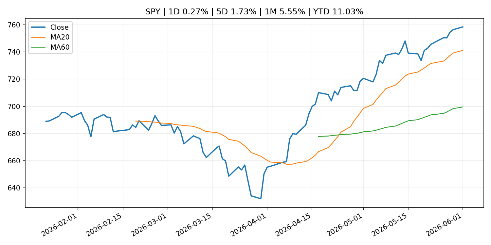
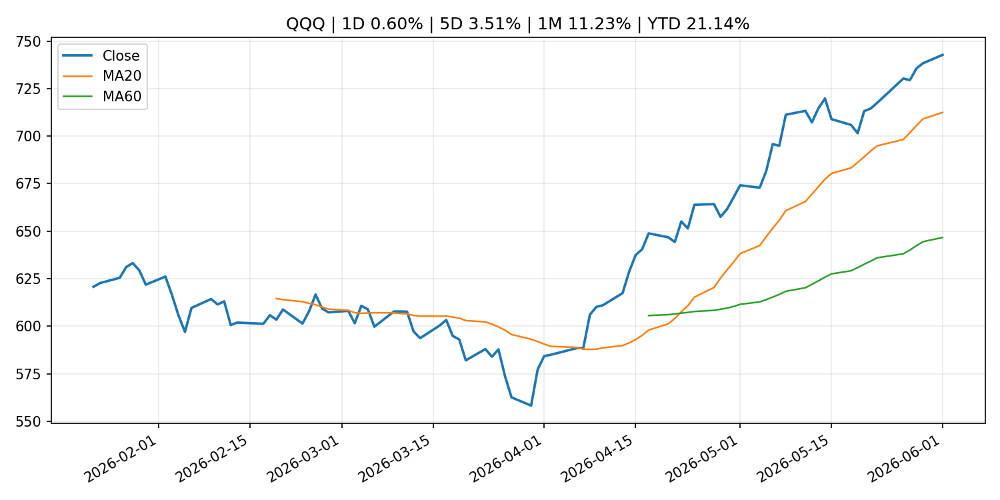
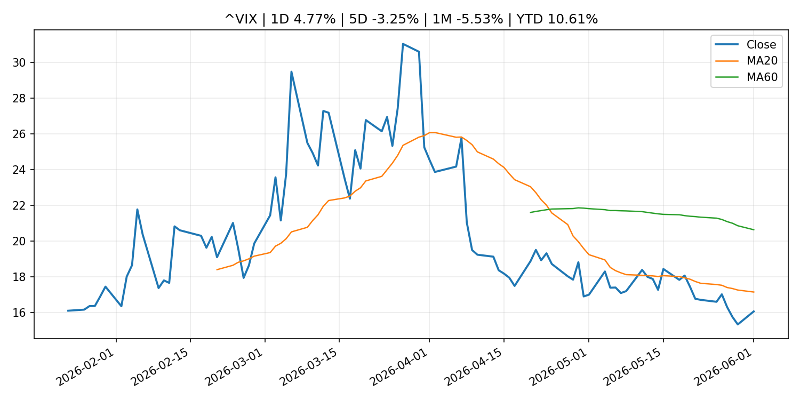
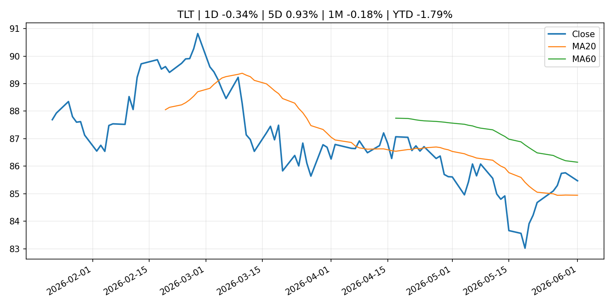
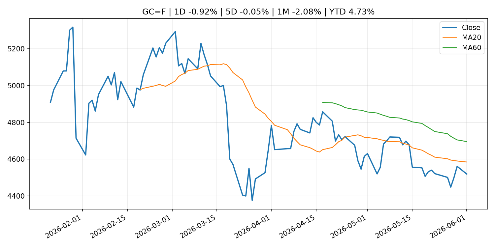
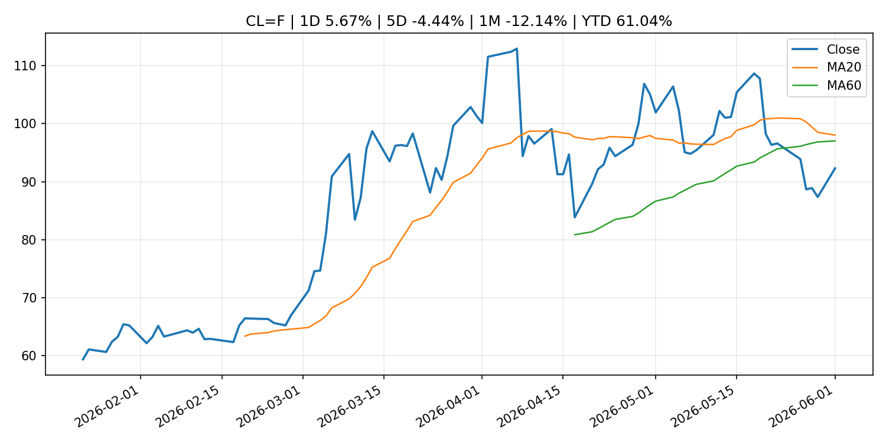
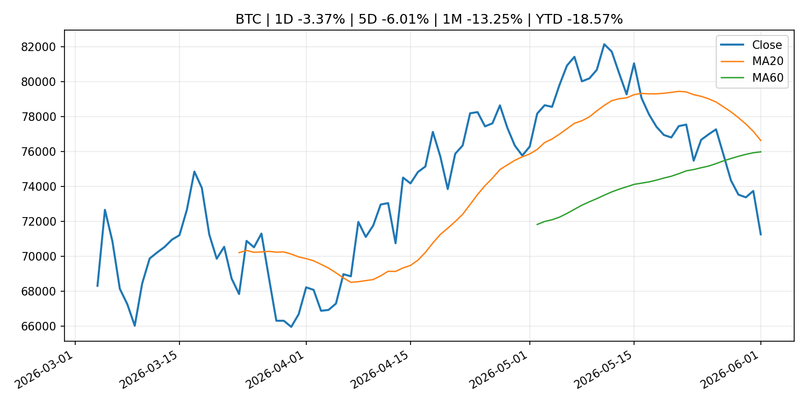
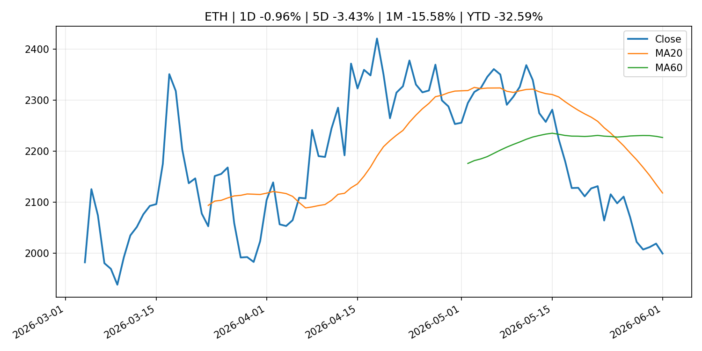
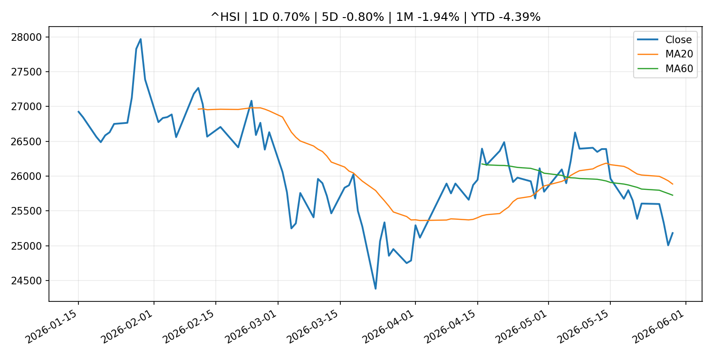

Global Macro Morning Briefing - 2026-06-02
Not financial advice / 非投资建议。
0. 今日总览
- 市场状态：unknown。市场信号不足，暂不判断明确状态。
- 今日三大主线：
- regulation: SEC Announces Four New Members of Investor Advisory Committee
- crypto_market_structure: Bitcoin extends slide as spot ETF outflows hit a record while Wall Street rips on AI
- central_bank_speech: Rubio odds for GOP 2028 nominee close to overtaking Vance on Kalshi
- 一句话结论：今日晨报重点关注：监管变化会改变行业盈利预期和资产风险溢价。；加密市场结构和监管变化会影响 BTC、ETH 及相关股票的风险溢价。。跨资产方面，SPY 1D 0.27%；QQQ 1D 0.60%；^VIX 1D 4.77%；TLT 1D -0.34%；GC=F 1D -0.92%；CL=F 1D 5.67%；BTC 1D -3.37%；ETH 1D -0.96%；市场信号不足，暂不判断明确状态。政策、通胀、利率、美元、美债、能源和加密监管仍是主要观察线索。所有结论仅基于公开数据与短摘要整理，不构成投资建议。
1. 隔夜跨资产市场
- 美股：SPY 1D 0.27%，QQQ 1D 0.60%，整体趋势需结合 VIX 和利率确认。
- 美债/美元：TLT 1D -0.34%，美元指数 1D 0.27%，是判断折现率压力的核心线索。
- 黄金/原油：黄金 1D -0.92%，原油 1D 5.67%，用于观察避险、通胀和地缘风险。
- 加密：BTC 1D -3.37%，ETH 1D -0.96%，关注是否独立于纳指走出加密自身行情。
- 港股/A股：恒生 1D 0.70%，沪深300/上证 1D n/a，重点看中国政策预期与人民币线索。
- 风险观察：关注后续数据是否确认当前跨资产信号。
US_EQUITY
| symbol | latest close | 1D | 5D | 1M | YTD | trend |
|---|---|---|---|---|---|---|
| SPY | 758.54 | 0.27% | 1.73% | 5.55% | 11.03% | strong_uptrend |
| QQQ | 742.74 | 0.60% | 3.51% | 11.23% | 21.14% | strong_uptrend |
| DIA | 511.44 | 0.13% | 1.05% | 2.98% | 5.75% | uptrend |
| IWM | 288.98 | -0.50% | 1.35% | 3.96% | 16.16% | uptrend |
| VTI | 373.40 | 0.23% | 1.80% | 5.43% | 11.03% | strong_uptrend |
US_MACRO_MARKET
| symbol | latest close | 1D | 5D | 1M | YTD | trend |
|---|---|---|---|---|---|---|
| ^VIX | 16.05 | 4.77% | -3.25% | -5.53% | 10.61% | strong_downtrend |
| DX-Y.NYB | 99.18 | 0.27% | -0.14% | 1.12% | 0.77% | range_bound |
| TLT | 85.47 | -0.34% | 0.93% | -0.18% | -1.79% | range_bound |
| IEF | 94.17 | -0.51% | 0.31% | -0.85% | -1.99% | downtrend |
COMMODITIES
| symbol | latest close | 1D | 5D | 1M | YTD | trend |
|---|---|---|---|---|---|---|
| GC=F | 4,518.60 | -0.92% | -0.05% | -2.08% | 4.73% | downtrend |
| SI=F | 75.31 | -0.40% | -0.77% | 2.42% | 6.74% | range_bound |
| CL=F | 92.31 | 5.67% | -4.44% | -12.14% | 61.04% | range_bound |
| BZ=F | 95.16 | 3.38% | -8.09% | -16.53% | 56.64% | range_bound |
| NG=F | 3.18 | -3.22% | 9.53% | 15.07% | -12.00% | strong_uptrend |
| HG=F | 6.57 | 3.26% | 3.55% | 10.82% | 16.44% | strong_uptrend |
HK_MARKET
| symbol | latest close | 1D | 5D | 1M | YTD | trend |
|---|---|---|---|---|---|---|
| ^HSI | 25,182.39 | 0.70% | -0.80% | -1.94% | -4.39% | range_bound |
| 0700.HK | 436.00 | 2.06% | -1.22% | -9.02% | -30.02% | strong_downtrend |
| 9988.HK | 122.80 | 1.57% | -3.31% | -5.97% | -17.58% | range_bound |
| 3690.HK | 78.25 | 6.54% | -3.81% | -5.89% | -25.19% | strong_downtrend |
| 1810.HK | 28.72 | 2.43% | -4.27% | -4.71% | -28.70% | strong_downtrend |
| 1211.HK | 90.75 | -0.60% | -0.93% | -16.20% | -8.10% | strong_downtrend |
CRYPTO
| symbol | latest close | 1D | 5D | 1M | YTD | trend |
|---|---|---|---|---|---|---|
| BTC | 71,265.42 | -3.37% | -6.01% | -13.25% | -18.57% | range_bound |
| ETH | 1,999.76 | -0.96% | -3.43% | -15.58% | -32.59% | strong_downtrend |
| SOLANA | 81.37 | -1.41% | -2.68% | -15.67% | -34.65% | range_bound |
| BINANCECOIN | 693.78 | -3.40% | 5.80% | 4.45% | -19.62% | strong_uptrend |
| RIPPLE | 1.30 | -3.07% | -2.33% | -11.96% | -29.49% | strong_downtrend |
2. 今日最重要的 10 条新闻
1. SEC Announces Four New Members of Investor Advisory Committee
- 来源：SEC Press Releases
- 时间：2026-06-01T12:39:44-04:00
- 地区：US
- 事件类型：regulation
- 重要性层级：Tier 2
- 一句话摘要：The Securities and Exchange Commission today announced four new members to fill vacancies on its Investor Advisory Committee. Three of the four new members will serve four-year terms, while the fourth new member will serve as the…
- 为什么重要：监管变化会改变行业盈利预期和资产风险溢价。
- 可能影响：主要影响 BTC，方向为 mixed，强度 high；加密监管或 ETF 进展会改变 BTC 的资金流和风险溢价。
- 资产：BTC 方向：mixed 强度：high 原因：加密监管或 ETF 进展会改变 BTC 的资金流和风险溢价。
- 资产：ETH 方向：mixed 强度：high 原因：监管框架会影响 ETH 产品化和机构参与度。
- 资产：COIN 方向：mixed 强度：medium 原因：监管清晰度和执法风险会影响交易平台估值。
- 资产：crypto market 方向：mixed 强度：high 原因：信息影响整个加密市场结构，但方向取决于细节。
- 原文链接：https://www.sec.gov/newsroom/press-releases/2026-50-sec-announces-four-new-members-investor-advisory-committee
2. Bitcoin extends slide as spot ETF outflows hit a record while Wall Street rips on AI
- 来源：CoinDesk
- 时间：2026-06-01T05:11:40+00:00
- 地区：global
- 事件类型：crypto_market_structure
- 重要性层级：Tier 2
- 一句话摘要：Bitcoin extends slide as spot ETF outflows hit a record while Wall Street rips on AI
- 为什么重要：加密市场结构和监管变化会影响 BTC、ETH 及相关股票的风险溢价。
- 可能影响：主要影响 BTC，方向为 mixed，强度 high；加密监管或 ETF 进展会改变 BTC 的资金流和风险溢价。
- 资产：BTC 方向：mixed 强度：high 原因：加密监管或 ETF 进展会改变 BTC 的资金流和风险溢价。
- 资产：ETH 方向：mixed 强度：high 原因：监管框架会影响 ETH 产品化和机构参与度。
- 资产：COIN 方向：mixed 强度：medium 原因：监管清晰度和执法风险会影响交易平台估值。
- 资产：crypto market 方向：mixed 强度：high 原因：信息影响整个加密市场结构，但方向取决于细节。
- 原文链接：https://www.coindesk.com/markets/2026/06/01/bitcoin-extends-slide-as-spot-etf-outflows-hit-a-record-while-wall-street-rips-on-ai
3. Rubio odds for GOP 2028 nominee close to overtaking Vance on Kalshi
- 来源：CNBC Economy
- 时间：2026-06-01T15:03:17+00:00
- 地区：US
- 事件类型：central_bank_speech
- 重要性层级：Tier 2
- 一句话摘要：Vice President Vance has seen his odds slip since the start of the year, as the secretary of State's chances have been buoyed by international conflicts.
- 为什么重要：央行官员表态可能影响市场对下一次会议的定价。
- 可能影响：可能影响利率、汇率、风险资产或大宗商品预期，但当前公开信息不足以判断明确方向。
- 资产：暂无明确资产映射
- 方向：unknown
- 强度：low
- 原因：公开信息不足以判断方向。
- 原文链接：https://www.cnbc.com/2026/06/01/rubio-odds-for-gop-2028-nominee-close-to-overtaking-vance-on-kalshi.html
4. Bitcoin remains under pressure as ETF outflows, higher oil prices weigh on crypto markets
- 来源：CoinDesk
- 时间：2026-06-01T11:15:00+00:00
- 地区：global
- 事件类型：other
- 重要性层级：Tier 3
- 一句话摘要：Bitcoin remains under pressure as ETF outflows, higher oil prices weigh on crypto markets
- 为什么重要：这条信息暂未匹配到重大宏观、政策或市场事件，更适合作为背景跟踪。
- 可能影响：主要影响 CL=F，方向为 positive，强度 high；供给扰动或 OPEC 减产通常推升 WTI 原油。
- 资产：CL=F 方向：positive 强度：high 原因：供给扰动或 OPEC 减产通常推升 WTI 原油。
- 资产：BZ=F 方向：positive 强度：high 原因：全球供给风险通常直接影响 Brent 原油。
- 资产：SPY 方向：mixed 强度：medium 原因：能源股可能受益，但通胀和成本压力不利于宽基风险资产。
- 资产：BTC 方向：mixed 强度：high 原因：加密监管或 ETF 进展会改变 BTC 的资金流和风险溢价。
- 资产：ETH 方向：mixed 强度：high 原因：监管框架会影响 ETH 产品化和机构参与度。
- 资产：COIN 方向：mixed 强度：medium 原因：监管清晰度和执法风险会影响交易平台估值。
- 原文链接：https://www.coindesk.com/daybook-us/2026/06/01/bitcoin-remains-under-pressure-as-etf-outflows-higher-oil-prices-weigh-on-crypto-markets
5. Japan's ruling party supports crypto ETF trading, yen-based stablecoins
- 来源：CoinDesk
- 时间：2026-06-01T13:38:04+00:00
- 地区：global
- 事件类型：other
- 重要性层级：Tier 3
- 一句话摘要：Japan's ruling party supports crypto ETF trading, yen-based stablecoins
- 为什么重要：这条信息暂未匹配到重大宏观、政策或市场事件，更适合作为背景跟踪。
- 可能影响：主要影响 BTC，方向为 mixed，强度 high；加密监管或 ETF 进展会改变 BTC 的资金流和风险溢价。
- 资产：BTC 方向：mixed 强度：high 原因：加密监管或 ETF 进展会改变 BTC 的资金流和风险溢价。
- 资产：ETH 方向：mixed 强度：high 原因：监管框架会影响 ETH 产品化和机构参与度。
- 资产：COIN 方向：mixed 强度：medium 原因：监管清晰度和执法风险会影响交易平台估值。
- 资产：crypto market 方向：mixed 强度：high 原因：信息影响整个加密市场结构，但方向取决于细节。
- 原文链接：https://www.coindesk.com/policy/2026/06/01/japan-s-ruling-party-supports-crypto-etf-trading-yen-based-stablecoins
3. 政策与央行观察
1. SEC Announces Four New Members of Investor Advisory Committee
- 来源：SEC Press Releases
- 时间：2026-06-01T12:39:44-04:00
- 地区：US
- 事件类型：regulation
- 重要性层级：Tier 2
- 一句话摘要：The Securities and Exchange Commission today announced four new members to fill vacancies on its Investor Advisory Committee. Three of the four new members will serve four-year terms, while the fourth new member will serve as the…
- 为什么重要：监管变化会改变行业盈利预期和资产风险溢价。
- 可能影响：主要影响 BTC，方向为 mixed，强度 high；加密监管或 ETF 进展会改变 BTC 的资金流和风险溢价。
- 资产：BTC 方向：mixed 强度：high 原因：加密监管或 ETF 进展会改变 BTC 的资金流和风险溢价。
- 资产：ETH 方向：mixed 强度：high 原因：监管框架会影响 ETH 产品化和机构参与度。
- 资产：COIN 方向：mixed 强度：medium 原因：监管清晰度和执法风险会影响交易平台估值。
- 资产：crypto market 方向：mixed 强度：high 原因：信息影响整个加密市场结构，但方向取决于细节。
- 原文链接：https://www.sec.gov/newsroom/press-releases/2026-50-sec-announces-four-new-members-investor-advisory-committee
2. Bitcoin extends slide as spot ETF outflows hit a record while Wall Street rips on AI
- 来源：CoinDesk
- 时间：2026-06-01T05:11:40+00:00
- 地区：global
- 事件类型：crypto_market_structure
- 重要性层级：Tier 2
- 一句话摘要：Bitcoin extends slide as spot ETF outflows hit a record while Wall Street rips on AI
- 为什么重要：加密市场结构和监管变化会影响 BTC、ETH 及相关股票的风险溢价。
- 可能影响：主要影响 BTC，方向为 mixed，强度 high；加密监管或 ETF 进展会改变 BTC 的资金流和风险溢价。
- 资产：BTC 方向：mixed 强度：high 原因：加密监管或 ETF 进展会改变 BTC 的资金流和风险溢价。
- 资产：ETH 方向：mixed 强度：high 原因：监管框架会影响 ETH 产品化和机构参与度。
- 资产：COIN 方向：mixed 强度：medium 原因：监管清晰度和执法风险会影响交易平台估值。
- 资产：crypto market 方向：mixed 强度：high 原因：信息影响整个加密市场结构，但方向取决于细节。
- 原文链接：https://www.coindesk.com/markets/2026/06/01/bitcoin-extends-slide-as-spot-etf-outflows-hit-a-record-while-wall-street-rips-on-ai
3. Rubio odds for GOP 2028 nominee close to overtaking Vance on Kalshi
- 来源：CNBC Economy
- 时间：2026-06-01T15:03:17+00:00
- 地区：US
- 事件类型：central_bank_speech
- 重要性层级：Tier 2
- 一句话摘要：Vice President Vance has seen his odds slip since the start of the year, as the secretary of State's chances have been buoyed by international conflicts.
- 为什么重要：央行官员表态可能影响市场对下一次会议的定价。
- 可能影响：可能影响利率、汇率、风险资产或大宗商品预期，但当前公开信息不足以判断明确方向。
- 资产：暂无明确资产映射
- 方向：unknown
- 强度：low
- 原因：公开信息不足以判断方向。
- 原文链接：https://www.cnbc.com/2026/06/01/rubio-odds-for-gop-2028-nominee-close-to-overtaking-vance-on-kalshi.html
4. 市场异动与图表
- QQQ 上涨 0.60%
- VIX 上涨 4.77%
- Gold 下跌 -0.92%
- Oil 上涨 5.67%
- BTC 下跌 -3.37%
SPY

QQQ

^VIX

TLT

GC=F

CL=F

BTC

ETH

^HSI

5. 华尔街与机构公开观点
- 暂无可靠公开观点。
6. 今日重点关注
- 经济数据：经济数据：暂无可靠公开日历数据；如配置经济日历源后可自动填充。
- 央行讲话：央行讲话：暂无可靠公开日历数据；重点跟踪 Fed、ECB、BoJ、PBOC 官网 RSS。
- 财报：财报：暂无可靠数据。
- 政策事件：政策事件：暂无可靠数据。
- 风险提醒：风险提醒：关注数据源失败项、突发地缘风险、利率和美元的二阶反应。
7. 英文金融表达与宏观概念
- supply disruption：供给扰动，通常指能源或商品供应受冲突、减产或天气影响。 例句：Supply disruption can lift oil prices and inflation expectations.
- market structure：市场结构，指交易、托管、清算、ETF、监管等制度安排。 例句：Crypto market structure rules can affect institutional participation.
- inflation expectations：通胀预期，指家庭、企业或市场对未来通胀的预估。 例句：Inflation expectations can shape wage bargaining and bond yields.
- real yield：实际收益率，名义利率扣除通胀预期后的收益率。 例句：Gold often reacts more to real yields than nominal yields.
- terminal rate：终端利率，市场预期本轮加息周期的最高政策利率。 例句：A higher terminal rate can pressure growth stocks.
- soft landing：软着陆，指通胀回落而经济避免明显衰退。 例句：Markets often rally when data support a soft landing.
8. 背景材料
- Here’s what’s worth streaming in June 2026 on Netflix, Hulu, HBO Max and more（MarketWatch Top Stories，other）：HBO’s ‘House of the Dragon,’ Hulu’s ‘The Bear’ and Apple’s ‘Cape Fear’ will try to compete with the World Cup
- I am 71. Would it be foolish to sell $10,000 in shares to visit my grandchildren in Thailand?（MarketWatch Top Stories，other）：“I am comfortable living on my Social Security and pension income.”
- Crypto funds suffer second-largest outflows of 2026 while XRP and HYPE attract inflows（CoinDesk，other）：Crypto funds suffer second-largest outflows of 2026 while XRP and HYPE attract inflows
- Saylor's Strategy sold bitcoin for the first time since 2022. These firms are still buying（CoinDesk，other）：Saylor's Strategy sold bitcoin for the first time since 2022. These firms are still buying
- It's not 2022 anymore: What Strategy's first bitcoin sale can (and can't) tell us about this one（CoinDesk，other）：It's not 2022 anymore: What Strategy's first bitcoin sale can (and can't) tell us about this one
- Michael Saylor breaks silence after Strategy sells $2.5 million in bitcoin（CoinDesk，other）：Michael Saylor breaks silence after Strategy sells $2.5 million in bitcoin
- Strategy sparks panic with bitcoin sale, but analysts say it was 'immaterial'（CoinDesk，other）：Strategy sparks panic with bitcoin sale, but analysts say it was 'immaterial'
- Strategy’s bitcoin sale sparks a $14 million betting chaos on Polymarket（CoinDesk，other）：Strategy’s bitcoin sale sparks a $14 million betting chaos on Polymarket
- Japan's ruling party supports crypto ETF trading, yen-based stablecoins（CoinDesk，other）：Japan's ruling party supports crypto ETF trading, yen-based stablecoins
- Live markets: Bitcoin retreats under $72,000 as Strategy unloads BTC for first time in four years（CoinDesk，other）：Live markets: Bitcoin retreats under $72,000 as Strategy unloads BTC for first time in four years
- Michael Saylor's Strategy sold 32 bitcoin for $2.5 million to fund dividend payments（CoinDesk，other）：Michael Saylor's Strategy sold 32 bitcoin for $2.5 million to fund dividend payments
- Bitcoin remains under pressure as ETF outflows, higher oil prices weigh on crypto markets（CoinDesk，other）：Bitcoin remains under pressure as ETF outflows, higher oil prices weigh on crypto markets
- Bitcoin, ether start June in the red while futures show taste for risk. XLM, HYPE gain（CoinDesk，other）：Bitcoin, ether start June in the red while futures show taste for risk. XLM, HYPE gain
- Bitcoin and software stocks are breaking up — and history says a major crypto move is coming（CoinDesk，other）：Bitcoin and software stocks are breaking up — and history says a major crypto move is coming
- ECB Consumer Expectations Survey results – April 2026（ECB Press Releases，other）：ECB Consumer Expectations Survey results – April 2026
- Citi predicts the tokenized securities market will grow to $5.5 trillion by 2030（CoinDesk，other）：Citi predicts the tokenized securities market will grow to $5.5 trillion by 2030
- Sources of Changes in Current Account Balances and Market Operations (May)（Bank of Japan Announcements，other）：Sources of Changes in Current Account Balances and Market Operations (May)
- Isabel Schnabel: From money market funds to stablecoins: lessons for central banks（ECB Press Releases，other）：Isabel Schnabel: From money market funds to stablecoins: lessons for central banks
- Luis de Guindos: Interview with Expansión（ECB Press Releases，other）：Luis de Guindos: Interview with Expansión
9. 数据源、失败项与免责声明
- 采集时间：2026-06-01T23:27:27
- 数据源：公开 RSS、Yahoo Finance、CoinGecko、AKShare、FRED、SEC data.sec.gov，以及用户自有 inputs/reports 文件。
- 合规说明：不绕过 WSJ、Bloomberg、FT、Reuters 等付费墙；对付费媒体只使用公开 RSS 标题、摘要、链接和发布时间。
- 免责声明：Not financial advice / 非投资建议。本项目仅供个人学习、研究和信息整理，不构成投资建议、交易建议或任何收益承诺。
- 失败或跳过的数据源：
- crypto data failed coin=dogecoin
- China market data failed symbol=上证指数: empty dataframe
- China market data failed symbol=深证成指: empty dataframe
- China market data failed symbol=创业板指: empty dataframe
- China market data failed symbol=沪深300: empty dataframe
- China market data failed symbol=中证500: empty dataframe
- China market data failed symbol=科创50: empty dataframe
- FRED_API_KEY not set; skipping FRED macro series
- SEC failed cik=0000320193
- SEC failed cik=0000789019
- SEC failed cik=0001045810
- SEC failed cik=0001318605
- SEC failed cik=0001577552